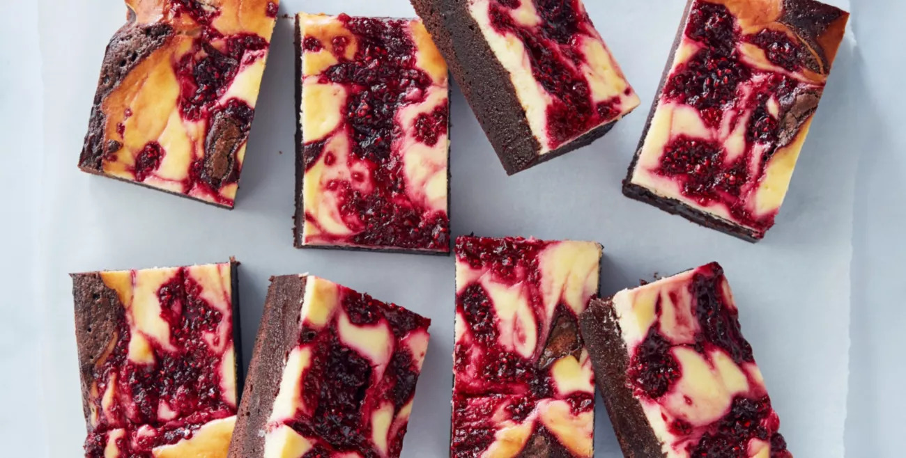

Raspberry Cheesecake Brownies

Ingredients
Brownie Layer
- 1 cup brown sugar
- 1 cup plain flour
- 1 tbs vanilla extract
- 1/2 cup cocoa powder
- 3 free range eggs, lightly beaten
- 1 cup caster sugar
- 250g unsalted butter, melted
Cheesecake Layer
- 250g cream cheese, softened
- 1 tsp vanilla extract
- 1 free range egg
- 1/3 cup caster sugar
Raspberry layer
- 1 cup frozen raspberries
- 1 tbs caster sugar
Method
-
Preheat oven to 180°C/160°C fan-forced Lightly grease and line a 27.5 x 17.5cm (3.5cm deep) slice tin with baking paper.
-
Raspberry Layer Place raspberries and sugar in a small microwave-safe bowl and stir to combine. Microwave on high for 2 minutes, then gently stir and set aside.
-
Cheesecake Layer Add cream cheese and caster sugar to a food processor and blitz until smooth. Add egg and vanilla and blitz until combined.
-
Brownie: Combine sugar and butter in a large bowl. Add remaining ingredients with a pinch of salt and mix until combined.
-
Assemble: Place brownie mixture into tin and use the back of a spoon to level. To create a marble effect, dollop cream cheese over brownie, followed by dollops of raspberry. Run a skewer through pan in 3cm intervals in one direction, then run skewer through at three evenly spaced intervals in the other direction to finish.
-
Bake: Bake for 45 minutes or until mixture has only a slight wobble. Remove tin from oven and allow to cool completely, then transfer tin to fridge for 2 hours or overnight before serving.